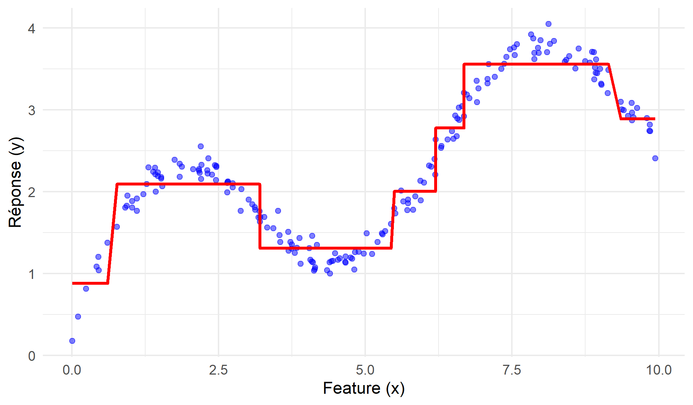
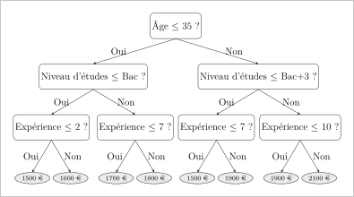

1 Les arbres de décision
Les arbres de décision désignent un éventail d’algorithmes de machine learning, utilisés notamment pour des tâches de classification et de régression. Ces algorithmes constituent la brique élémentaire des méthodes ensemblistes à base d’arbres (forêt aléatoire et gradient boosting). Cette section a pour objectif de présenter ce qu’est un arbre de décision, sa structure et la terminologie associée (Section 1.1), puis de détailler la méthode de construction des arbres par l’algorithme CART (Section 1.2).
1.1 Le principe fondamental: partitionner pour prédire
Le principe des arbres de décision consiste à diviser l’espace des caractéristiques en sous-régions homogènes à l’aide de règles simples, puis de former pour chaque sous-région une prédiction à partir des observations présentes dans cette sous-région. Imaginons par exemple que l’on souhaite prédire le prix d’une maison en fonction de sa superficie et de son nombre de pièces, à partir d’un ensemble de transactions pour lesquelles le prix est connu. L’espace des caractéristiques (superficie et nombre de pièces) est vaste, et les prix des maisons (la réponse à prédire) sont très variables. L’idée centrale des arbres de décision est de diviser cet espace en zones plus petites, au sein desquelles les maisons ayant des surfaces et un nombre de pièces similaire ont des prix proches, et d’attribuer une prédiction identique à toutes les maisons situées dans la même zone. Malgré cette apparente simplicité, les arbres de décision sont puissants et capables de modéliser des interactions complexes et non linéaires entre les variables d’un jeu de données.
1.1.1 Les défis du partitionnement optimal
L’objectif principal est de trouver la partition de l’espace des caractéristiques qui offre les meilleures prédictions possibles. Cependant, cet objectif se heurte à plusieurs difficultés, et la complexité du problème augmente rapidement avec le nombre de caractéristiques et la taille de l’échantillon:
Infinité des découpages possibles: Il existe une infinité de façons de diviser l’espace des caractéristiques;
Complexité de la paramétrisation: Il est difficile de représenter tous ces découpages avec un nombre limité de paramètres;
Optimisation complexe: Même avec une paramétrisation, trouver le meilleur découpage nécessite une optimisation complexe, souvent irréaliste en pratique.
1.1.2 Les solutions apportées par les arbres de décision
Pour surmonter ces difficultés, les algorithmes d’arbres de décision, et notamment le plus célèbre, l’algorithme CART (Classification And Regression Tree, Breiman et al. (1984)), procèdent à trois simplifications cruciales:
Optimisation gloutonne (greedy optimization): plutôt que de rechercher d’emblée un partitionnement optimal, les arbres de décision partitionnent l’espace selon une approche séquentielle. A chaque étape, l’arbre choisit la meilleure division possible d’une région en deux sous-régions, indépendamment des étapes précédentes ou suivantes. Ce processus est répété pour chaque sous-région, ce qui permet d’affiner progressivement le partitionnement de l’espace, jusqu’à ce qu’un critère d’arrêt soit atteint. Cette méthode dite “gloutonne” (greedy) s’avère très efficace, car elle décompose un problème d’optimisation complexe en une succession de problèmes plus simples et plus rapides à résoudre. Le résultat obtenu n’est pas nécessairement un optimum global, mais il s’en approche raisonnablement et surtout rapidement.
Simplification des règles de partitionnement: au lieu d’explorer tous les règles de décision possibles, les arbres de décision se restreignent à des règles de décision très simples, appelés découpages binaires (binary splits): à chaque étape, l’algorithme divise chaque région de l’espace en deux sous-régions à l’aide d’une règle de décision (decision rule) qui ne fait appel qu’à une seule caractéristique (ou variable) et à un seul seuil (ou critère) pour cette segmentation. Cela revient à poser une question simple telle que: “La valeur de la caractéristique \(X\) dépasse-t-elle le seuil \(x\) ?” Par exemple: “La superficie de la maison est-elle supérieure à 100 m² ?”. Les deux réponses possibles (“Oui” ou “Non”) définissent deux nouvelles sous-régions distinctes de l’espace, chacune correspondant à un sous-ensemble de données plus homogènes.
Simplicité des prédictions locales: une fois le partitionnement réalisé, une prédiction est calculée pour chaque région à partir des observations des données d’entraînement présentes dans cette région. Il s’agit souvent de la moyenne des valeurs cibles dans cette région (régression) ou de la classe majoritaire (classification). Un point essentiel est que la prédiction est constante au sein de chaque région.
1.1.3 Terminologie et structure d’un arbre de décision
Cet algorithme est appelé arbre de décision (decision tree) en raison provient de la structure arborescente en forme d’arbre inversé qui apparaît lorsqu’on en fait une représentation graphique (voir figure 1). Plus généralement, les principaux éléments qui composent les arbres de décision sont désignés par des termes issus du champ lexical des arbres:
Nœud Racine (Root Node): Le nœud-racine est le point de départ de l’arbre de décision, il est situé au sommet de l’arbre. Il contient l’ensemble des données d’entraînement avant tout partitionnement. À ce niveau, l’algorithme cherche la caractéristique la plus discriminante, c’est-à-dire celle qui permet de diviser les données en deux régions de manière à minimiser un certain critère d’hétérogénéité (comme l’indice de Gini pour la classification ou la variance pour la régression).
Nœuds Internes (Internal Nodes): Les nœuds internes sont les points intermédiaires où l’algorithme CART applique des règles de décision pour diviser les données en sous-régions plus petites. Chaque nœud interne se définit par une règle de décision basée sur une variable et un seuil, qui sert à opérer un partitionnement des données. Le plus souvent, la règle de décision est exprimée sous la forme d’une inégalité telle que
x_3 <= 7. Chaque nœud interne a la fois un nœud-parent (parent node) dont il constitue une sous-région et deux nœuds-enfants (child nodes) qui le partitionnent. Le noeud de gauche regroupe les observations pour lesquelles la règle de décision est vérifiée (valeurs basses); le noeud de droite regroupe les observations pour lesquelles la règle de décision n’est pas vérifiée (valeurs élevées).Branches (Branches): Les branches sont les connexions entre les nœuds et représentent le chemin suivies par les données. Chaque branche correspond à une décision binaire, “Oui” ou “Non”, qui oriente les observations vers une nouvelle subdivision de l’espace des caractéristiques.
Nœuds Terminaux ou Feuilles (Leaf Nodes, Terminal Nodes ou Leaves): Les nœuds terminaux, situés à l’extrémité des branches, sont les points où le processus de division s’arrête. Ils fournissent la prédiction finale. Dans un problème de classification, la prédiction d’une feuille est soit la classe majoritaire parmi les observations de la feuille (par exemple, “Oui” ou “Non”), soit une probabilité d’appartenir à chaque classe. Dans un problème de régression, la prédiction d’une feuille est une valeur numérique, souvent la moyenne des observations de la feuille.
Profondeur (Depth): La profondeur d’un arbre de décision correspond à la longueur du chemin le plus long entre le nœud-racine et une feuille. Le nœud-racine est situé par définition à la profondeur 0, et chaque niveau supplémentaire de l’arbre ajoute une unité à la profondeur. La profondeur totale de l’arbre est donc le nombre maximal de décisions (ou de nœuds internes) à traverser pour passer du nœud-racine à une feuille.
1.1.4 Propriétés des arbres de décision
Les arbres de décision ont plusieurs propriétés qui contribuent à leur puissance prédictive et facilitent leur usage en pratique:
Les arbres de décision ne font aucune hypothèse a priori sur la relation entre les variables explicatives et la variable-cible. C’est une différence majeure avec les modèles économétriques standards, tels que la régression linéaire qui suppose une relation linéaire de la forme \(E(y) = \mathbf{X \beta}\).
Un arbre de décision est une fonction constante par morceaux: la prédiction est identique pour toutes les observations situées dans la même région, et ne peut varier qu’entre régions1. Une conséquence de cette propriété est qu’un arbre de décision peut capter sans difficultés les non-linéarités dans la relation entre la variable-cible et les variables numériques (voir la figure 2). Il est donc inutile d’inclure des variables supplémentaires telles que le carré ou le cube des variables continues.
Figure 2: Arbre de décision et non-linéarité Les arbres de décision sont par construction capables de capter des interactions entre variables explicatives sans qu’il soit nécessaire de les spécifier explicitement. En effet, la prédiction pour une observation dépend de la combinaison des différentes variables intervenant dans les règles de décision qui mènent à la feuille terminale, ce qui traduit une interaction entre les variables. La figure 3 illustre ces interactions avec un arbre de décision qui prédit le salaire en fonction de l’âge, du niveau d’étude, et de l’expérience. On voit d’une part que les feuilles terminales sont définies par la conjonction de règles de décision qui font intervenir ces trois variables, avec des seuils différents selon les branches de l’arbre, et d’autre part que l’effet d’une caractéristique sur le salaire dépend des autres caractéristiques de l’individu. Par exemple, une augmentation de l’expérience de 7 à 8 années se traduira une augmentation de salaire de 100 € si l’individu a moins de 35 ans et un niveau d’études inférieur au bac, par une augmentation de 200 € s’il a plus de 35 ans et un niveau d’étude supérieur à Bac+ 3, et sera sans effet sur le salaire dans les autres cas.
Figure 3: Interactions dans un arbre de décision Dans un arbre de décision, les valeurs prises par les variables numériques (par exemple l’âge) n’ont pas d’importance par elles-mêmes, c’est l’ordre de ces valeurs qui est essentiel. Ainsi, dans la règle de décision “L’âge est-il inférieur à 30 ans?”, ce n’est pas la valeur “30” qui importe par elle-même, c’est le fait qu’elle sépare les observations en deux groupes, selon que l’âge est inférieur ou supérieur à 30 ans. Cette propriété a pour conséquence que les arbres de décision sont insensibles aux modifications strictement monotones des variables continues. Par exemple, remplacer l’âge par l’âge au carré ne changera rien à l’arbre de décision, car les règles de décision “L’âge est-il inférieur à 30 ans?” et “L’âge au carré est-il inférieur à 900?” sont strictement équivalentes (car elles définissent les mêmes groupes).
1.2 La construction d’un arbre de décision par l’algorithme CART
Depuis les années 1980, de multiples algorithmes ont été proposés pour construire des arbres de décision, notamment CART (Breiman et al. (1984)), C4.5 (Quinlan (2014)) et MARS (Friedman (1991)). La présente section présente la méthode de construction et l’utilisation d’un arbre de décision par l’algorithme CART. Cette méthode comprend quatre étapes:
Choisir une mesure d’impureté adaptée au problème;
Construire l’arbre de décision par un partitionnement séquentiel;
Élaguer l’arbre de décision;
Utiliser l’arbre pour prédire.
1.2.1 Définir une mesure d’impureté adaptée au problème
La mesure d’impureté quantifie l’hétérogénéité des observations au sein d’un nœud par rapport à la variable cible (classe pour la classification, ou valeur continue pour la régression). Plus précisément, une mesure d’impureté est conçue pour croître avec la dispersion dans un nœud: plus un nœud est homogène, plus son impureté est faible. Un nœud est dit pur lorsque toutes les observations qu’il contient appartiennent à la même classe (classification) ou présentent des valeurs similaires voire identiques (régression). Le choix de la mesure d’impureté dépend du type de problème (voir ci-dessous).
La mesure d’impureté est un élément essentiel de la construction des arbres de décision. En effet, c’est elle qui est utilisée pour comparer entre elles les règles de décision possibles. À chaque étape de la croissance de l’arbre (tree growing), l’algorithme sélectionne la règle de décision qui réduit le plus l’impureté, afin de définir des nœuds les plus homogènes possibles. L’arbre final dépend donc de la mesure d’impureté utilisée: si pour un problème donné on construit un second arbre avec une autre mesure d’impureté, on obtient généralement un arbre différent du premier (car les règles de décision retenues à chaque nœud ne sont plus les mêmes).
1.2.1.1 Mesures d’impureté pour les problèmes de classification
Dans un problème de classification où l’on souhaite classifier des observations parmi \(K\) classes, une mesure d’impureté \(I(t)\) est une fonction qui quantifie l’hétérogénéité des classes dans un nœud donnée. Les mesures d’impureté usuelles détaillées ci-dessous partagent les deux propriétés suivantes:
Pureté maximale: lorsque toutes les observations du nœud appartiennent à une seule classe, c’est-à-dire que la proportion \(p_k = 1\) pour une classe \(k\) et \(p_j = 0\) pour toutes les autres classes \(j \neq k\), l’impureté est minimale et \(I(t) = 0\). Cela indique que le nœud est entièrement pur, ou homogène.
Impureté maximale: lorsque les observations sont réparties de manière uniforme entre toutes les classes, c’est-à-dire que la proportion \(p_k = \frac{1}{K}\) pour chaque classe \(k\), l’impureté atteint son maximum. Cette situation reflète une impureté élevée, car le nœud est très hétérogène et contient une forte incertitude sur la classe des observations.
Il existe trois mesures d’impureté couramment utilisées en classification:
1. L’indice de Gini
L’indice de Gini mesure la probabilité qu’un individu sélectionné au hasard dans un nœud soit mal classé si on lui attribue une classe au hasard, en fonction de la distribution des classes dans ce nœud. Pour un nœud \(t\) contenant \(K\) classes, l’indice de Gini \(G(t)\) est donné par
\[ G(t) = 1 - \sum_{k=1}^{K} p_k^2 \]
où \(p_k\) est la proportion d’observations appartenant à la classe \(k\) dans le nœud \(t\).
Critère de choix: L’indice de Gini est très souvent utilisé parce qu’il est simple à calculer et capture bien l’homogénéité des classes au sein d’un nœud. Il privilégie les partitions où une classe domine fortement dans chaque sous-région.
2. L’entropie (ou entropie de Shannon)
L’entropie est une autre mesure de l’impureté utilisée dans les arbres de décision. Elle mesure la quantité d’incertitude ou de désordre dans un nœud, en s’appuyant sur la théorie de l’information. Pour un nœud \(t\) contenant \(K\) classes, l’entropie \(E(t)\) est définie par:
\[ E(t) = - \sum_{k=1}^{K} p_k \log(p_k) \]
où \(p_k\) est la proportion d’observations de la classe \(k\) dans le nœud \(t\).
Critère de choix: L’entropie a tendance à être plus sensible aux changements dans les distributions des classes que l’indice de Gini, car elle attribue un poids plus élevé aux événements rares (valeurs de \(p_k\) très faibles). Elle est souvent utilisée lorsque l’erreur de classification des classes minoritaires est particulièrement importante.
3. Taux d’erreur
Le taux d’erreur est une autre mesure de l’impureté parfois utilisée dans les arbres de décision. Il représente la proportion d’observations mal classées dans un nœud. Pour un nœud \(t\), le taux d’erreur \(\text{TE}(t)\) est donné par:
\[ \text{TE}(t) = 1 - \max(p_k) \]
où \(\max(p_k)\) est la proportion d’observations appartenant à la classe majoritaire dans le nœud.
Critère de choix: Bien que le taux d’erreur soit simple à comprendre, il est moins souvent utilisé dans la construction des arbres de décision parce qu’il est moins sensible que l’indice de Gini ou l’entropie aux petits changements dans la distribution des classes.
1.2.1.2 Mesures d’impureté pour les problèmes de régression
Dans les problèmes de régression, l’objectif est de partitionner les données de manière à réduire au maximum la variabilité des valeurs au sein de chaque sous-région. Pour mesurer cette variabilité, la mesure d’impureté la plus couramment employée est la somme des erreurs quadratiques (SSE). Elle évalue l’impureté d’une région en quantifiant à quel point les valeurs de cette région s’écartent de la moyenne locale. Pour un nœud \(t\), contenant \(N\) observations avec des valeurs \(y_i\), la SSE est donnée par:
\[ \text{SSE}(t) = \sum_{i=1}^{N} (y_i - \hat{y})^2 \]
où \(\hat{y}\) est la moyenne des valeurs \(y_i\) dans le nœud.
Cette mesure d’impureté a des propriétés similaires à celles présentées pour la classification: si toutes les valeurs de \(y_i\) dans un nœud sont proches de la moyenne \(\hat{y}\), la SSE sera faible, indiquant une homogénéité élevée dans le nœud. Inversement, une SSE élevée indique une grande variabilité dans les valeurs, donc un nœud impur. Une limite de cette mesure d’impureté est qu’elle est particulièrement sensible aux écarts élevés entre les valeurs observées et la moyenne prédite, et donc aux valeurs extrêmes.
1.2.2 Construire l’arbre de décision par un partitionnement séquentiel
Une fois la mesure d’impureté définie, l’algorithme CART construit séquentiellement le partitionnement de l’espace des caractéristiques en comparant les règles de décision possibles (voir figure 4). La première étape de partitionnement part du nœud-racine, qui comprend l’ensemble des données d’entraînement. L’algorithme construit toutes les règles de décision candidates en parcourant toutes les valeurs de toutes les caractéristiques, les évalue en calculant la réduction de l’impureté induite par chacune d’entre elles et sélectionne la règle de décision (caractéristique et seuil) qui entraîne la réduction d’impureté maximale. Par exemple, l’algorithme évalue la règle candidate “Superficie > 100 m²” en calculant la somme des impuretés au sein des deux sous-régions générées par cette règle (“Oui” et “Non”), puis calcule la différence entre cette somme et l’impureté du noeud-racine. L’algorithme évalue ensuite la règle candidate “Superficie > 101 m²” de la même façon, et ainsi de suite pour toutes les valeurs de superficie, puis évalue les règles candidates construites avec le nombre de pièces, et enfin sélectionne la meilleure règle. La deuxième étape du partitionnement reproduit le même processus, cette fois au niveau d’un des deux nœuds-enfants, et ainsi de suite.
L’algorithme CART poursuit ce partitionnement récursif jusqu’à ce qu’un critère d’arrêt prédéfini soit atteint. Dans la plupart des implémentations de CART, les valeurs par défaut de ces critères d’arrêt sont telles que que l’algorithme construit un arbre maximal: le plus profond possible, avec une observation par feuille terminale.
1.2.3 Contrôler la complexité de l’arbre
Il est généralement préférable d’éviter les arbres trop complexes car ils sont souvent affectés par un problème de surajustement. Deux approches permettent de contrôler la complexité d’un arbre de décision:
Approche a priori: la complexité de l’arbre peut être plafonnée pendant sa construction à l’aide d’hyperparamètres telles que la profondeur maximale de l’arbre, le nombre minimal d’observations par feuille ou la réduction minimale de l’impureté nécessaire à chaque étape pour ajouter un noeud interne. Cette approche est simple à mettre en oeuvre, mais peut aboutir à des arbres trop simples et peu prédictifs si les hyperparamètres sont mal choisis.
Approche a posteriori: l’autre approche consiste à construire un arbre maximal puis à procéder à un élagage (tree pruning) qui vise à simplifier l’arbre et à augmenter sa capacité à généraliser sur de nouvelles données en supprimant progressivement les branches les moins utiles. Il existe différents critères d’élagage, parmi lesquels le chemin de coût-complexité 2.
1.2.4 Utiliser l’arbre pour prédire
Une fois l’arbre construit, la prédiction pour une nouvelle observation s’effectue en suivant les branches de l’arbre depuis le nœud racine jusqu’à un nœud terminal (ou feuille), comme l’illustre la figure @#fig-decision-tree-prediction. À chaque nœud interne, une décision est prise en fonction des valeurs des caractéristiques de l’observation, ce qui détermine la direction à suivre vers l’une des sous-régions. Ce cheminement se poursuit jusqu’à ce que l’observation atteigne une feuille, où la prédiction finale sera simplement la valeur associée à cette feuille.
1.3 Avantages et limites des arbres de décision
1.3.1 Avantages
Simplicité et interprétabilité: Les arbres de décision sont faciles à comprendre et à visualiser (à condition qu’ils ne soient pas trop profonds).
Facilité d’usage: les arbres de décision ne demandent pas de transformations complexes des données.
Flexibilité: Ils peuvent gérer des caractéristiques numériques et catégorielles, ainsi que les valeurs manquantes.
Gestion des interactions: Les arbres sont des modèles non paramétriques et ne font aucune hypothèse sur la distribution des variables. Ils capturent aisément les relations non-linéaires et les interactions entre les caractéristiques.
1.3.2 Limites
Surapprentissage: Les arbres de décision peuvent facilement devenir trop complexes et être surajustés d’entraînement, ce qui nuit à leur capacité prédictive sur de nouvelles données.
Biais envers les classes majoritaires: En présence de données déséquilibrées, les arbres de décision peuvent privilégier la classe majoritaire, ce qui dégrade la performance sur les classes minoritaires.
Optimisation locale: L’approche gloutonne peut conduire à des solutions globalement sous-optimales (optimum local).
Instabilité: De petits changements dans les données peuvent entraîner des changements significatifs dans la structure de l’arbre (manque de robustesse).
References
Footnotes
Il existe néanmoins des variantes d’arbres de décision où la prédiction n’est pas constante au sein de chaque feuille, mais elles sont peu courantes en pratique et ne sont pas couvertes par le présent document↩︎
Les approches d’élagage sont détaillées notamment dans ce cours et dans la documentation de
scikit-learn.↩︎